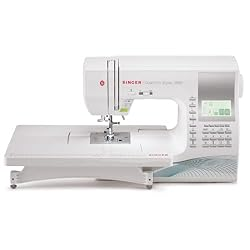

Product Of the week
Mechanical Sewing Machine
Mechanical sewing machines like this one will run on an electrical motor. But their function and stitches will often be very limited, and their functions will change mechanically. They have knobs you will turn to change the needle position, stitches (on some machines), and stitch length and width. These machines have a graphic guide either on the front of the machine or on the knobs, so you'll know how to select them. Mechanical Sewing Machines are great for absolute beginners in sewing and for people who want a trust machine with basic functions. For example, this machine can be great as a “family sewing machine.” In this case, you can use the machine for mending small projects and even simple garments.
Weekly Sales
Industrial Sewing Machine
Industrial sewing machines are meant for heavy-duty industrial use. These machines have powerful motors and a high stitch-per-minute count. An industrial sewing machine is so durable and well-made that it can last a lifetime with the proper care. The only downside of these machines is that they only have one or a maximum of two types of stitches. This is because they are meant to be part of a large chain of mass production in which each machine has a purpose in the sewing process of a garment.
Computerized Sewing Machine
Computerized sewing machines are a much more advanced version of the electronic sewing machine. These machines have all their features available on touch screens and have most of all of their functions automatized. For example, they will have an automatic needle inserter, the stitch width and length, and the positioning of the needle. Another great feature of these machines is that they have USB ports that can connect to your online designs (for quilting or embroidering). They can also feature automatic thread cutters, color touch screens, stitch selectors, and even tutorials.
REASONS WHY YOU SHOULD SHOP WITH US
- User-Friendly Products: Our sewing machines are designed with simplicity in mind, ensuring that both beginnersand experienced sewers can enjoy effortless stitching.
- Quality Craftsmanship: We take pride in the quality of our products, with a focus on durability and precision to deliver the best results.
- Wide Selection: Explore our diverse range of sewing machines and accessories, catering to various sewing needs and preferences.
- Innovation: We're constantly at the forefront of sewing technology, introducing new features and functionalities to enhance your sewing experience.
We are so confident in the quality of our products that we offer a 100% satisfaction guarantee. If you're not completely satisfied with your purchase,simply return it for a full refund, no questions asked.